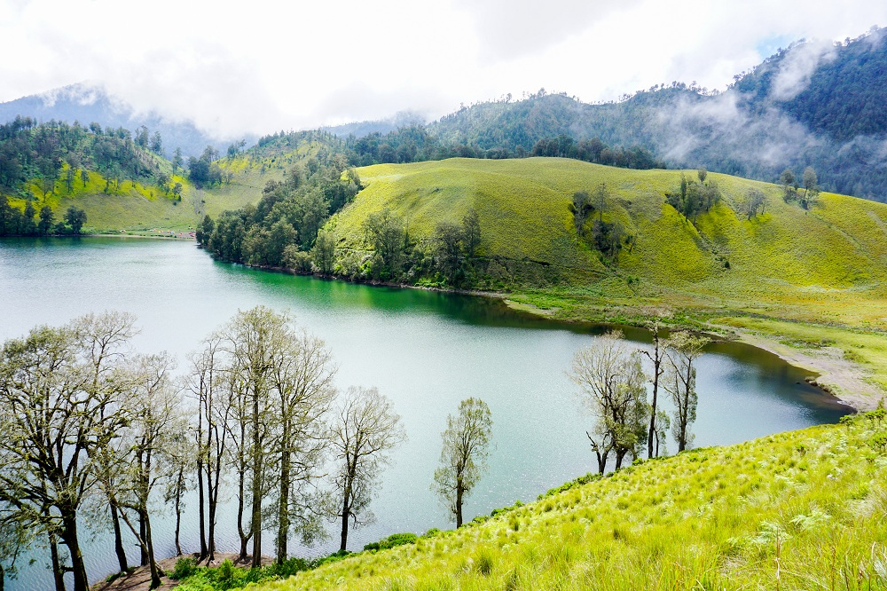

Wisata
Gunung Semeru menjadi salah satu destinasi pendakian yang tersohor di Indonesia. Pasalnya, gunung berbentuk kerucut ini merupakan gunung tertinggi di Pulau Jawa, dengan puncaknya yang terkenal dengan sebutan Mahameru pada ketinggian 3.676 mdpl.
Secara administrasi, Gunung Semeru termasuk dalam dua kabupaten, yaitu Malang dan Lumajang, Jawa Timur. Gunung ini berada dalam kawasan Taman Nasional Bromo Tengger Semeru. Keindahan Gunung Semeru memang tak bisa diragukan lagi. Bahkan, area di sekitar gunung pun memiliki pesona yang luar biasa mulai dari danau, perkebunan, hingga hamparan padang rumput. Tak jarang, wisatawan mengunjungi kawasan ini hanya untuk menjelajahi objek wisata yang ada di sekitaran Gunung Semeru, tak selalu harus mendaki sampai ke puncaknya. Bagi Anda yang ingin berwisata ke Gunung Semeru tapi enggan mendaki sampai ke puncaknya, berikut rekomendasi tempat-tempat yang bisa dikunjungi:
Ranu Kumbolo
Ranu Kumbolo merupakan sebuah danau yang berada di kaki Gunung Semeru. Namanya tentu sudah tak asing bagi para pencinta alam, sebab menjadi bagian dari rute termudah dari Ranu Pani menuju puncak Gunung Semeru. Namun, jika Anda tak berminat mendaki sampai ke puncak, bisa menjadikan Ranu Kumbolo ini sebagai tujuan terakhir. Dari danau ini pemandangan alamnya sungguh luar biasa menakjubkan, bahkan disebut-sebut sebagai surganya Semeru.